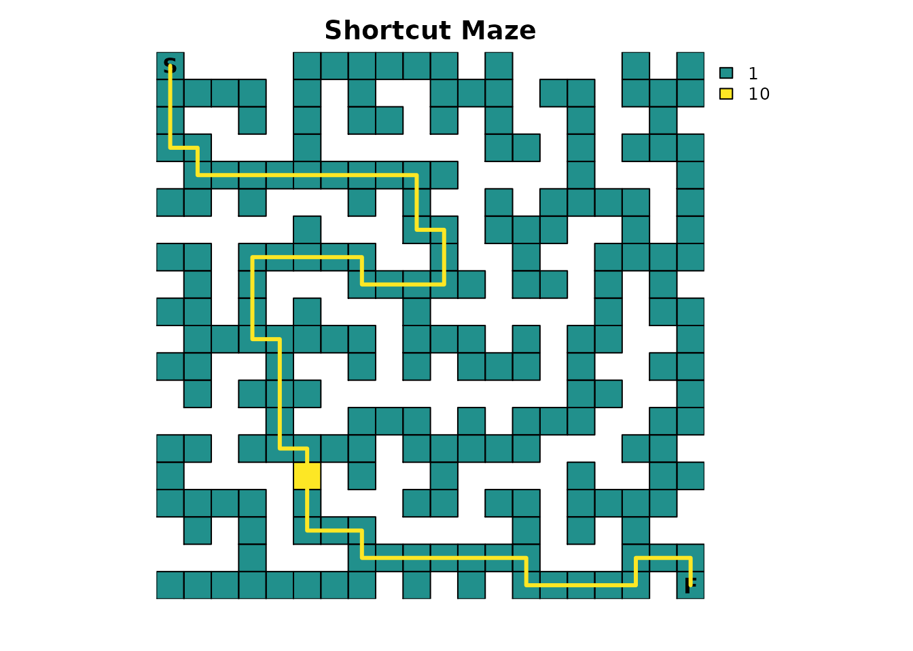
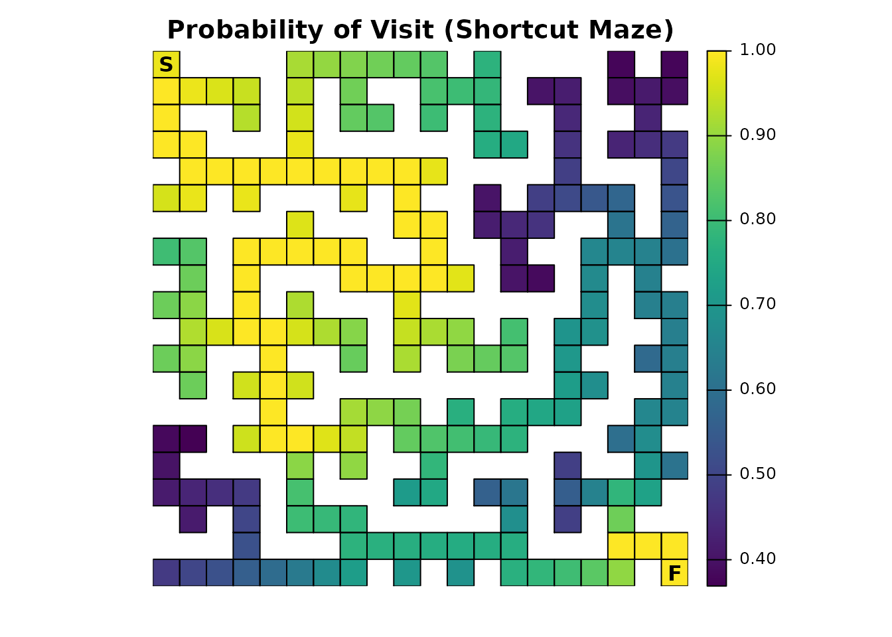
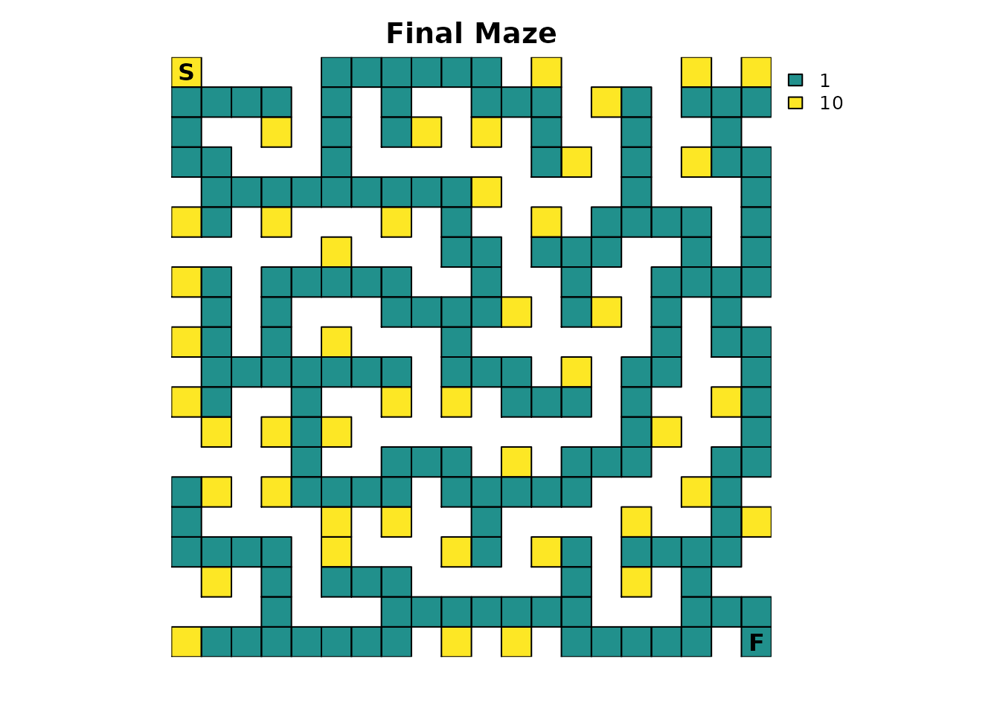
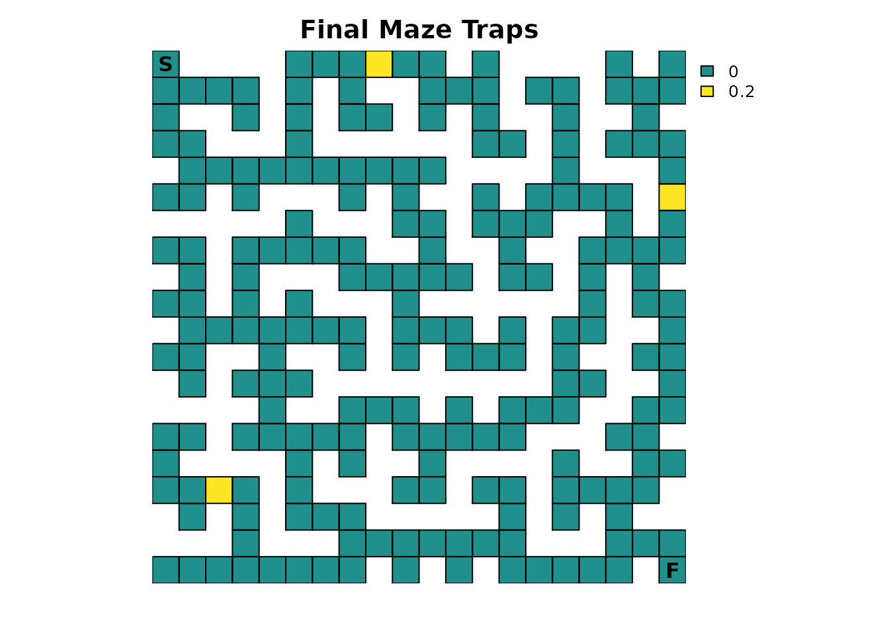
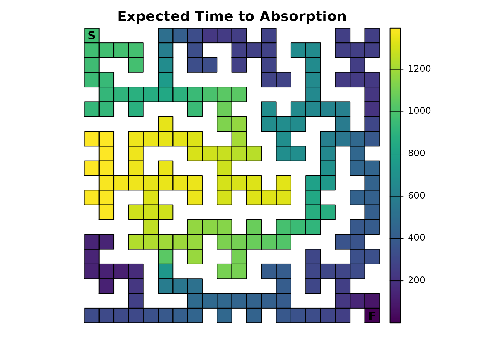

Introduction
The third part of the series takes the perfect maze with only a single solution and modifies it so that it now has more than one solution. Afterward, all of the changes introduced in the series are combined into a single complex example.
The complete code for this series is available on Github.
Shortcut
To start, the original maze will be modified so that it has a new cell bridging previously existing cells. The location was chosen so that it effectively acts as a shortcut to the previous solution. To make things more interesting, it will be treated as a secret passage by giving it a high resistance value so that it is only rarely utilized. This is effectively the same method used to model dead-end avoidance in Part 2, but here the interpretation is different because of where the high resistance is located.
# Create a copy and add a shortcut
short_res <- maze_res
short_res[16, 6] <- 10
# Get info about the shortest path through the new maze using gdistance
lcd2 <- (function() {
points <- xyFromCell(short_res, c(1, 400))
tr <- transition(raster(short_res), function(x) 1/mean(x), 4)
tr <- geoCorrection(tr)
list(dist = gdistance::costDistance(tr, points),
path = shortestPath(tr, points[1, ], points[2, ], output="SpatialLines"))
})()
plot_maze(short_res, "Shortcut Maze", vir_col)
lines(lcd2$path, col = vir_col[2], lw = 3)
Use gdistance to quickly verify the change in distance
for the shortest solution:
# Let's see what the difference in distance is
lcd2$dist - lcd$dist
#> 1
#> 2 -9Since the structure of the resistance input has changed, the absorption input also has to be changed so that it has the same structure:
# Our old absorption layer does not quite match our new resistance layer, so make a new one
short_finish <- short_res * 0
short_finish[20, 20] <- 1With new resistance and absorption inputs, the samc object has to be recreated:
short_samc <- samc(short_res, short_finish, model = rw_model)
# Important: we have to rerun locate()
short_origin <- locate(short_samc, data.frame(x = 1, y = 20))
short_dest <- locate(short_samc, data.frame(x = 20, y = 1))An important thing to keep in mind: modifying where NA
and non-NA cells are located in the map means that previous
results from locate() are no longer guaranteed to be valid.
In this case, start is technically the same, but
finish is not and will return incorrect results, or in
special cases even lead to a crash.
With that, let’s begin exploring the different metrics and compare
them to the results from Part 1. Starting with
survival():
short_surv <- survival(short_samc)
plot_maze(map(short_samc, short_surv), "Expected time to finish (Shortcut Maze)", viridis(256))
There are two noticeable changes. First, the expected time to finish is drastically decreased for the starting point:
# Expected time to finish from the start
short_surv[maze_origin]
#> [1] 9022.974
# The difference from our original maze
short_surv[maze_origin] - maze_surv[maze_origin]
#> [1] -4846.026The second change is the overall increase in expected time to finish when an individual is in the bottom left region of the maze because the shortcut can lead them away from the finish point when they are in this region. If the shortcut was asymmetric (i.e., one way), there would still be a drastic decrease in the time to finish for the starting point, but then the bottom left region would remain unchanged from the original maze. This type of model setup is possible with the package, but not without directly providing the P matrix. Graph support in the future will make more complex scenarios like a one-way shortcut easier to set up.
Part 2 showed that the inclusion of additional absorbing states
changes the relationship between survival() and
cond_passage(). Since this example is back to a single
absorbing state at the finish point, this relationship is restored:
short_cond <- cond_passage(short_samc, dest = short_dest)
short_cond[maze_origin]
#> [1] 9021.974Part 2 also showed that including additional absorbing states affects the probability of cells being visited. Modifying the maze to have multiple routes also has significant ramifications:
short_disp <- dispersal(short_samc, origin = short_origin)
#>
#> Cached diagonal not found.
#> Performing setup. This can take several minutes... Complete.
#> Calculating matrix inverse diagonal...
#> Computing: 100% (done)
#> Complete
#> Diagonal has been cached. Continuing with metric calculation...
plot_maze(map(short_samc, short_disp), "Probability of Visit (Shortcut Maze)", viridis(256))
Notably, it is again no longer possible to discern the optimal route
through the maze by looking for cells with a probability of
1.0. But, like Part 2, a partial path can still be
identified:
# Ideally, we would just use `as.numeric(short_disp == 1)`, but we have floating point precision issues here, so we will approximate it
short_disp_sol <- as.numeric(abs(short_disp - 1) < tolerance)
plot_maze(map(short_samc, short_disp_sol), "Partial solution (Shortcut Maze)", vir_col)In this case, the result contains the solution for the regions before and after the loop created by the shortcut.
Combined Example
So far, a variety of changes to the original maze have been independently explored. Now, many of them will be combined into a more complex model. First, the resistance and absorption inputs need to be updated:
# Combine our previous resistance layers
all_res <- max(c(short_res, ints_res, ends_res), na.rm = TRUE)
# For absorption, all we need is an updated version of our traps raster
all_traps <- maze_traps
all_traps[16, 6] <- 0
# Total absorption
all_abs_total <- short_finish + all_traps
# If we had more variety in our resistance values we would want more colors
plot_maze(all_res, "Final Maze", vir_col)
# Plot the traps raster
plot_maze(all_traps, "Final Maze Traps", vir_col)
There is an unusual artifact present in our new resistance raster: our shortcut leads into a former dead end, and the dead end resistance value will increase the probability of the individual turning around in the shortcut even though, from the perspective of the shortcut, it is not a dead end. However, when approaching from the bottom, the dead end still exists if we assume the shortcut is hidden. This is a case where having asymmetric transition probabilities would be a more ideal solution, but for simplicity, we will leave things as they are.
Create the new samc object:
all_samc <- samc(all_res, all_abs_total, model = rw_model)
# We can actually reuse the short_res locations in this case, but let's make new ones anyway
all_start <- locate(all_samc, data.frame(x = 1, y = 20))
all_finish <- locate(all_samc, data.frame(x = 20, y = 1))Following the previous model changes, start by looking at the expected time to absorption:
all_surv <- survival(all_samc)
# Note the updated title from part 1
plot_maze(map(all_samc, all_surv), "Expected Time to Absorption", viridis(256))
Similar to Part 2, the presence of additional absorbing states (the
traps), drastically changes the result and interpretation of the
survival() metric. The results are very similar to part 2,
but the presence of a shortcut does increase access to both the bottom
left trap and the finish point. The relative role of each isn’t clear,
but it does overall seem to decrease the time to absorption.
Next is a complete overview of the different results for
survival() and cond_passage():
# Original results (Part 1)
survival(maze_samc)[maze_origin]
#> [1] 13869
cond_passage(maze_samc, origin = maze_origin, dest = maze_dest)
#> [1] 13868
# Results with traps (Part 2)
survival(traps_samc)[maze_origin]
#> [1] 1330.26
cond_passage(traps_samc, origin = maze_origin, dest = maze_dest)
#> [1] 3060.207
# Results with a shortcut
survival(short_samc)[short_origin]
#> [1] 9022.974
cond_passage(short_samc, origin = short_origin, dest = short_dest)
#> [1] 9021.974
# Results with everything
survival(all_samc)[all_start]
#> [1] 968.4007
cond_passage(all_samc, origin = all_start, dest = all_finish)
#> [1] 2000.364The presence of both the traps and the shortcut has a cumulative effect on both metrics; the time to absorption decreases, as does the time to conditional first passage (the time to finish assuming the individual is not absorbed elsewhere).
Comparing the traps-only version of the maze to the cumulative maze
using the mortality() metric shows how introducing the
shortcut affects the probability of finishing the maze vs being absorbed
in the traps:
traps_mort[traps_mort > 0]
#> [1] 0.852084306 0.113761093 0.003940915 0.030213685
all_mort <- mortality(all_samc, origin = all_start)
all_mort[all_mort > 0]
#> [1] 0.81665446 0.08106988 0.05073905 0.05153661With the introduction of the shortcut, the probability of absorption
into the two top traps is reduced because less time is spent in the top
portion of the maze relative to the now more accessible bottom portion.
Also, the probability of absorption into the bottom left trap has
increased by more than an order of magnitude, accounting for most of the
decrease in the top two traps. Finally, an individual is somewhat more
likely to survive and finish the maze. Note that the numeric indexes for
the later two points are shifted by one; this is due to changing a
NA cell to non-NA for the shortcut, and it is
related to why the locate() should be rerun when the
structure of the input(s) to samc() changes.
By now, the process of exploring the different metrics for these examples should be clear. This example highlighted a few key metrics and it is left to the user to explore the remaining metrics if they are interested in doing so. Additionally, this combined example left out the occupancy and fidelity changes introduced in previous parts; this is another opportunity for readers to practice making and exploring further modifications to the model.